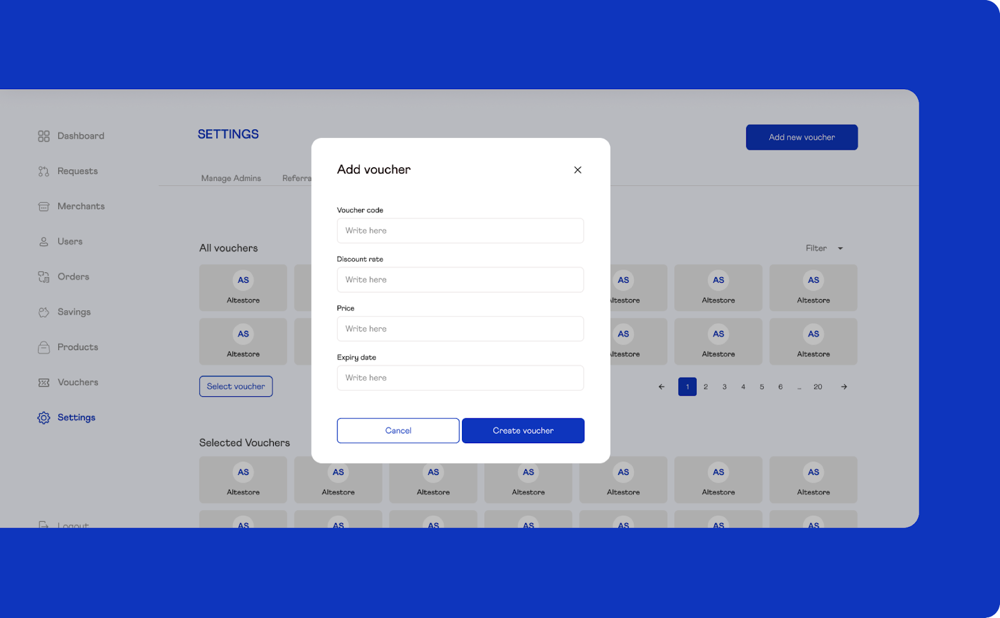
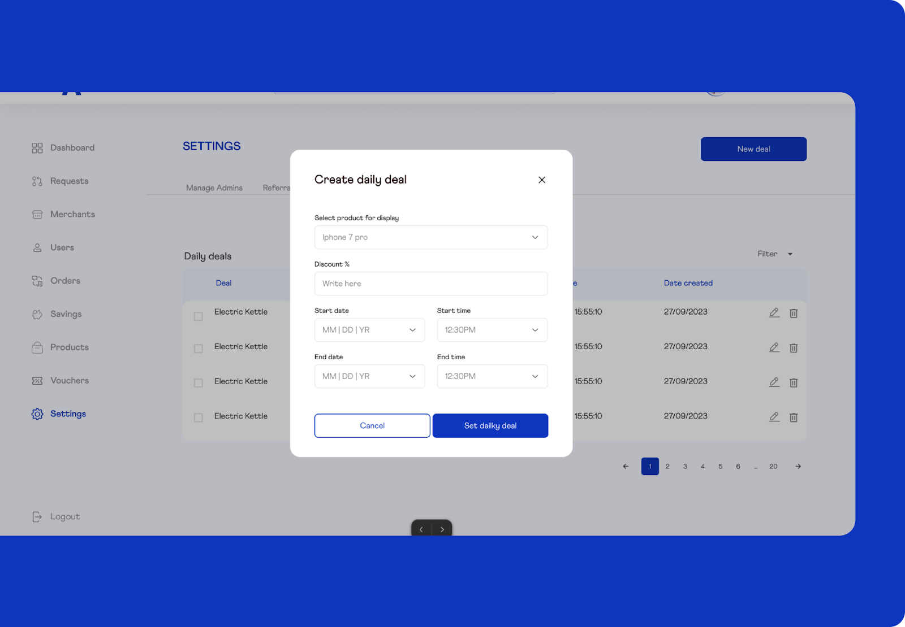
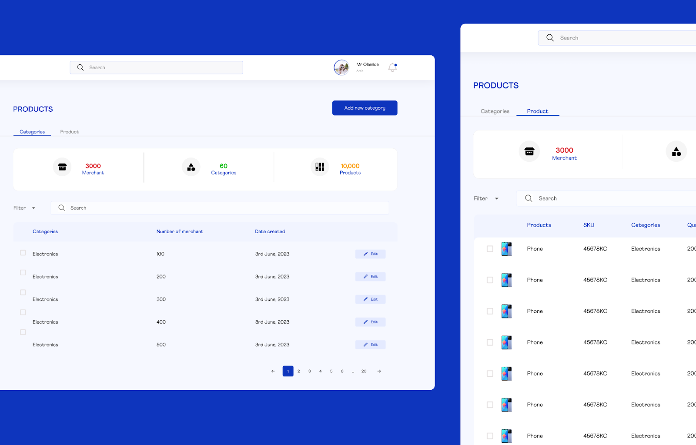
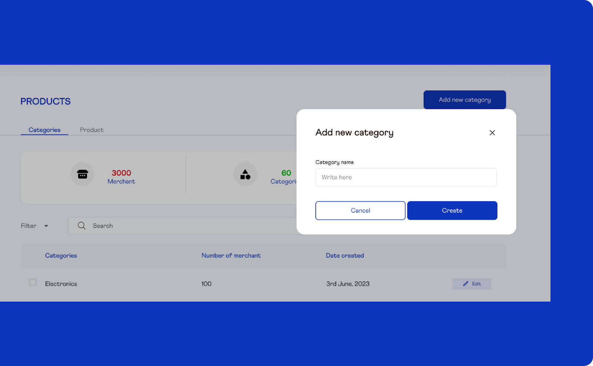
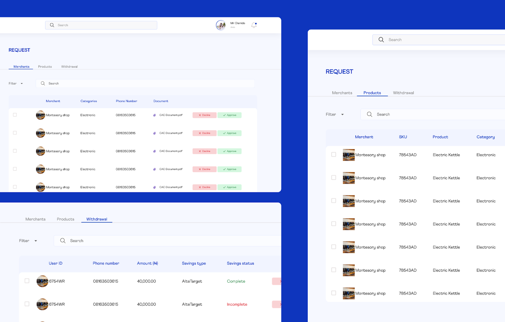
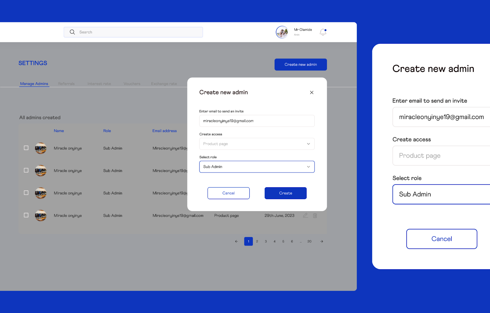
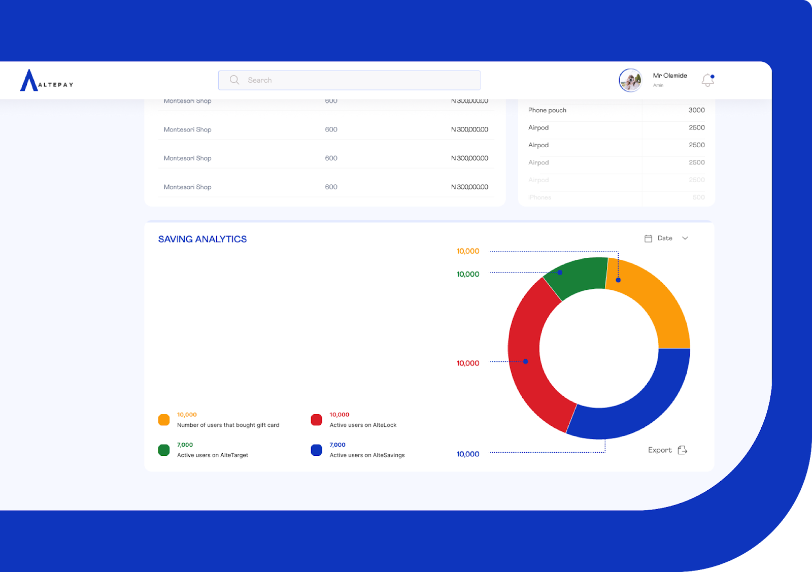

Altepay — Admin Dashboard, Product & Merchant Management System (2024)

Miracle Onyinye

When Altepay reached out to me in 2024, the company was at a pivotal stage. They were building a modern
financial infrastructure platform designed to support merchants and digital businesses across Africa,
but they needed an internal system powerful enough to manage it all. Their goal wasn't simply to build
an admin dashboard; they wanted a scalable, secure, and intuitive back-office engine capable of handling
thousands of merchants, real-time transactions, product catalogues, settlements, and compliance
workflows.
I was responsible for designing the complete Admin Dashboard ecosystem, including Product Management,
Merchant Management, Compliance Tools, User Roles & Permissions, and the operational workflows that
power Altepay's fintech infrastructure. My work required deep research into fintech operations, merchant
behavior, fraud patterns, and the unique challenges of payment systems within the African market.
This research shaped a design system that balances efficiency, clarity, and trust, essentials for a
platform handling sensitive financial operations at scale.


The Challenge
Building a fintech admin dashboard is far more than arranging tables and filters. Altepay needed a system capable of supporting complex financial interactions with absolute precision.
Key challenges included:
1. Complex Merchant Onboarding
African merchants vary widely, from SMEs to large enterprises, and each requires different onboarding requirements, compliance steps, and KYC checks.
African merchants vary widely, from SMEs to large enterprises, and each requires different onboarding requirements, compliance steps, and KYC checks.
2. Real-Time Transaction Visibility
Customer support teams, compliance officers, and administrators must be able to track, filter, dispute, and audit transactions instantly.
Customer support teams, compliance officers, and administrators must be able to track, filter, dispute, and audit transactions instantly.
3. Product & Services Configuration
Altepay offers multiple financial products, each with parameters like fees, commissions, limits, API keys, and settlement rules.
Altepay offers multiple financial products, each with parameters like fees, commissions, limits, API keys, and settlement rules.
4. Fraud & Risk Monitoring
The admin dashboard must allow quick detection of suspicious patterns, failed transactions, chargebacks, and abnormal merchant activity.
The admin dashboard must allow quick detection of suspicious patterns, failed transactions, chargebacks, and abnormal merchant activity.
5. Role-Based Access Control
Different internal teams needed specific permissions, from support agents to senior admins, without exposing sensitive financial data.
Different internal teams needed specific permissions, from support agents to senior admins, without exposing sensitive financial data.
6. Scalable Information Architecture
The platform must support thousands of merchants and large datasets while remaining fast, clean, and easy to navigate.
The platform must support thousands of merchants and large datasets while remaining fast, clean, and easy to navigate.
7. High-Trust User Experience
Because administrators make high-impact decisions, the interface needed to minimize errors, ambiguity, and data misinterpretation.
Because administrators make high-impact decisions, the interface needed to minimize errors, ambiguity, and data misinterpretation.
Research & Insights
To design a robust fintech operational platform, I conducted research across several areas:
Fintech Admin Systems
To understand how leading companies structure settlement tools, dispute management, product configuration, and API oversight.
To understand how leading companies structure settlement tools, dispute management, product configuration, and API oversight.
Compliance & Risk Tools
Studied KYC/KYB patterns, document review systems, and audit log best practices to design safe internal workflows.
Studied KYC/KYB patterns, document review systems, and audit log best practices to design safe internal workflows.
Merchant Behavior & Pain Points
Investigated how African merchants interact with digital payment platforms, identifying common frustrations around onboarding, verifications, and settlement delays.
Investigated how African merchants interact with digital payment platforms, identifying common frustrations around onboarding, verifications, and settlement delays.
Operational Team Needs
What information do they search for most
Which transaction filters matter
How disputes escalate
What slows down daily tasks
What information do they search for most
Which transaction filters matter
How disputes escalate
What slows down daily tasks
These insights shaped a dashboard that supports both speed and accuracy.
The Solution
The Altepay Admin Dashboard was designed as a unified control center, combining merchant oversight, product configuration, compliance review, and operational monitoring into a seamless experience.
Below are the core systems I designed:
1. Merchant Management System
Centralized Merchant Profiles
Complete view of each merchant's business information, documents, financial activity, and risk rating.
Complete view of each merchant's business information, documents, financial activity, and risk rating.
Smart Onboarding Flows
Admins can review submitted documents, approve, decline, or request updates with guided checklists.
Admins can review submitted documents, approve, decline, or request updates with guided checklists.
Risk & Activity Indicators
Color-coded risk levels, recurring failed transactions, API misuse alerts, and account health summaries.
Color-coded risk levels, recurring failed transactions, API misuse alerts, and account health summaries.
Merchant Support Toolkit
Ability to pause accounts, reset API keys, handle disputes, or send notifications, all controlled by access levels.
Ability to pause accounts, reset API keys, handle disputes, or send notifications, all controlled by access levels.
2. Product Management System


Configurable Product Catalogues
Admins can create, edit, and manage financial products such as:
Payment links
POS services
Virtual accounts
Wallet systems
Settlement rules
Admins can create, edit, and manage financial products such as:
Payment links
POS services
Virtual accounts
Wallet systems
Settlement rules
3. Transaction & Settlement Oversight

Real-Time Transaction Monitoring
Admins can view, filter, and inspect thousands of transactions with:
Status tags
Error codes
Customer details
Merchant metadata
Timeline views
Admins can view, filter, and inspect thousands of transactions with:
Status tags
Error codes
Customer details
Merchant metadata
Timeline views
4. Role-Based Access Control (RBAC)

Permission Hierarchy
Separate access levels for:
Support agents
Risk officers
Compliance teams
Product managers
Super admins
Separate access levels for:
Support agents
Risk officers
Compliance teams
Product managers
Super admins
Custom Role Creation
Allows Altepay to create new roles as the company scales.
Allows Altepay to create new roles as the company scales.
5. Dashboard & Analytics


Operational Metrics
Quick insights into total merchants, active merchants, approval queues, unresolved disputes, and settlement statuses.
Quick insights into total merchants, active merchants, approval queues, unresolved disputes, and settlement statuses.
Transaction Charts
Trend lines showing spikes, drops, and risk anomalies.
Trend lines showing spikes, drops, and risk anomalies.
System Alerts
Flags unusual patterns like repeated failed payments or API abuse.
Flags unusual patterns like repeated failed payments or API abuse.
Learnings
Fintech Requires Clarity Above All
Every data point must be readable at a glance, especially where financial decisions have real consequences.
Every data point must be readable at a glance, especially where financial decisions have real consequences.
Operational Speed Matters
Reducing friction in onboarding, settlement approval, and dispute resolution dramatically improves merchant satisfaction.
Reducing friction in onboarding, settlement approval, and dispute resolution dramatically improves merchant satisfaction.
Security Must Be Invisible but Strong
From audit logs to permissions, the system is designed to protect merchants, their funds, and the company.
From audit logs to permissions, the system is designed to protect merchants, their funds, and the company.
Scalability = Future-Proofing
Information architecture was built with long-term growth in mind, ensuring Altepay can expand its services, merchant base, and operational teams without system redesign.
Information architecture was built with long-term growth in mind, ensuring Altepay can expand its services, merchant base, and operational teams without system redesign.